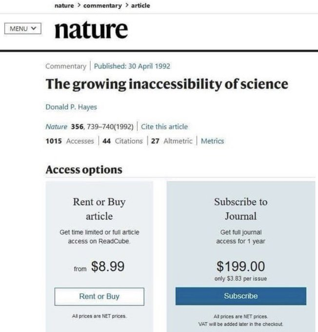

Week 51
Jon Favreau might just have saved Star Wars
DW: "Boeing 737 Max retesting marred by 'lapses'. A fresh round of tests on the Max 737 airliner was flawed, claims a US Senate committee report"
This guy is such a pencil-neck, dumb fucking asshole. Meet the B-Team.
"U.K. Lawmaker Under Fire for Calling UNICEF’s Free Meals a ‘Political Stunt’. Jacob Rees-Mogg said the agency should be ashamed of itself for providing free meals to 15,000 children in Britain, prompting a backlash"
Tor is not "dark web". If there wasnt so much rampant surveillance, there'd be no need for it.
I detect an increased level of murmur around privacy, coming from the usual authoritarian corkmunchers
Bernie says there are still no progressives in the cabinet.
"@IMAKglobal
Patents today have become less of an instrument of invention and more a defensive business strategy to extract as many additional years of monopoly on a product as possible.”
"An Unprepared N.Y.P.D. Badly Mishandled Floyd Protests, Watchdog Says"
Finally a purer Linux phone (Android is Linux too in a way, it has LX kernel inside but with layers of crud on top)
OS is open source
All apps on it downloadable from its app store are open source
You can physically shut off it camera, Wifi, and Bluetooth. There are mechanical slide buttons for it.
The battery can be removed.
I WANT IT
Another rocket blows up? Gross incompetence on display here. Likely to do with the culture created in the company by its founder. If this guy keeps fucking up, u have to wonder what else is he wrong about? Battery electric cars? Minions need to reconsider. #spacex #tesla
"Pence prepares to oversee Trump’s loss — and then leave town. It’s a tactic Pence has used in recent weeks: stay out of the spotlight and insulate himself from his boss’s election-fraud crusade, while still bolstering his own credentials"
"While that debate over the damage done by Biden’s crime bill has long raged in Democratic Party politics and the criminal justice reform movement, it is now barred from being aired on the Facebook-owned social media giant Instagram, or at least is formally denounced as disinformation"

"Facebook escalates feud with Apple over iOS privacy changes. The social network releases a new ad claiming changes in Apple's mobile software will hurt small businesses and consumers"
Jacobin: "Neoliberalism Is Driving Away Working-Class Voters of Color. They Need to Be Won Back. Last month’s election was a mixed bag. Yes, Joe Biden got 12 million more votes than Hillary Clinton did. But Donald Trump added 9.5 million votes of his own. More than half of those new Trump voters — 4.6 million of them — came because he increased his share of nonwhite voters from 21 percent"
Cornwell RIP. I liked The Tailor of Panama
"@hazergroupltd
POSCO, the world’s fifth-largest steelmaker by output, said it will produce up to 5 million tons of hydrogen by 2050 to reduce its reliance on fossil fuels and transition to renewable energy sources"
sshfs, useful tool. Seamless remote file access through ssh.
"Australia and Japan inch closer towards landmark defence agreement...
The successful conclusion of a long-awaited Reciprocal Access Agreement (RAA) between Japan and Australia promises to elevate bilateral security and defence cooperation to a new level, according to Japanese Prime Minister Suga Yoshihide. Consisting of a legal framework to enable two-way visits for personnel and assets from both countries’ armed forces, Suga and his Australian counterpart, Scott Morrison, announced that broad agreement had been reached during a joint press conference in Tokyo on 17 November. It would be Japan’s first RAA since the Status of Forces Agreement signed with the United States in 1960"
Mmm 🤔
"[Certain software] is slow because of the overhead of delegating geometric operations to polymorphic C++ methods. Abstraction prevents simplification and optimization, in this case"
Religion is closer to left; it's always been so.. Jesus was a poor worker, Moses escaped from pheoroah's opression, Mohammad escaped from the bourgeoisie of Mekka to Medina and had to fight them.
Prosperity gospel..? God wants to you be a billionaire, more materialistic? A lot of this stuff is Cold War politics.. While fighting against "Godless" communists, it cld have made tactical sense to ally with religion this way, through odd cultish branches that preach religion in a certain way.. But the larger political reality has changed.
Some say CAATSA action on TR is symbolic..? Well little symbolic here, little symbolic there, soon ur talking real money
This week @Daimler @IVECO, @omv, @Shell and the @VolvoGroup committed to work together to help create the conditions for the mass-market roll-out of hydrogen trucks in Europe through the H2 Accelerate collaboration.
— Hazer Group Ltd (@hazergroupltd) December 17, 2020
Read more here: https://t.co/YM1S9JDZG3#hazergroupltd pic.twitter.com/JixTF3ZDCj
Predator 1987, good movie.
Just found out there is a back-story to 'get to the choppa'. Way before that, he says 'we make a stand now, or there will be nobody left to go to the choppa', then it's 'get to the choppa'.
Taibbi: "News companies hate stories about inequality for a variety of reasons, but especially because they’re a bummer: advertisers know images of deprivation and suffering depress the urge to buy, which is why we typically don’t see poverty on TV unless it’s being chased by police. Hard to sell Buicks to guilt-ridden audiences. There are larger political considerations: the ideology underpinning most modern news coverage assumes poverty is the fault of the poor"
I wonder if he means quaalude.
But sure, quaquaalude sounds more "Italian". 🤣 🤣
Total clown this guy. Great comic IMO
WTF is quaquaalude anyway
Dude looks like he is on drugs
"@byHeatherLong
NEW: Nearly 8 million Americans have fallen into poverty since the summer. It's the fastest rise in poverty in the past 60 years"
There’s a massive Beltway press corps with ample access to Congress, and people are coming to the @dailyposter with these stories because they know we’ll actually read and relay the details of these bills instead of writing about the politics of it and stupid process bullshit pic.twitter.com/3dqZgW0m4n
— Andrew Perez (@andrewperezdc) December 15, 2020
"@SecPompeo
Despite our warnings, Turkey moved ahead with its purchase and testing of the S-400 system from Russia. Today’s sanctions on Turkey's SSB demonstrates the U.S. will fully implement #CAATSA. We will not tolerate significant transactions with Russia's defense sector"
We can have 100 000 fuel cell 🚚 in #EU by 2030. This could make up 17% of the annual sales, reducing up to 11 million t CO2 generated by the transport sector.
— FCH JU (@fch_ju) December 15, 2020
Discover more findings in the recently published study Fuel Cells Hydrogen Trucks➡ https://t.co/jb6ErIVKsF pic.twitter.com/StGmtcR9I7
"@H2Europe
Things are moving in the #energy sector. @eni and @EnelGroup announced that they will partner up to develop #GreenHydrogen projects"
Do not like synthetic shit in clothing. 100% cotton baby
and boy is it over
whadida sah?
what do you want [Trump supporters] remember you by? As the jagoff who knifed him, or sorta stood by, repeated some bogus shit along with many others, than "celebrated democracy" after it was all over.
"McConnell congratulates Biden on victory, acknowledging him as president-elect"
Do they say black people dont like dogs? Weird...This is like the "black people don't camp" streotype..
????
"Raphael Warnock’s Dog Ads Cut Against White Voters’ Stereotypes Of Black People"
Why is the use of renewable fuel, even if produced from fossil, preferable?
Easier enforcement.
Fossil fuel at the end-user can leak, emission more likely. Carmakers can cheat (see the Volkswagen 2015 scandal).
But if gov encourages, enforces clean fuel production at the source, even with CCS, or even better 100% clean production, then all the way down the line, beginning, middle, the end, we know there can be no leaks, no emissions. No need to police Volkswagen, or Honda, Toyota, etc. their fuel-cell car will have no choice but be clean.
Exactly what this guy said
Of course regulatory arbitrage and the pushback to it, i.e. level-playing field, is more of an issue for UK bcz of its closeness to the EU, in terms of geo.
🤣 🤣 🤣
F24 Headline: "Brexit's Never Ending Endgame"
These guys are attempting to mimic photosynthesis.
"SunHydrogen, Inc. (OTC: HYSR), the developer of a breakthrough technology to produce renewable hydrogen using sunlight and water, today announced the closing of its previously announced registered direct offering of 120,000,000 shares of the Company’s common stock, at a purchase price of $0.075 per share. The gross proceeds from the offering were 9,000,000 dollars"
LTJ Bukem - Journey Inwards #music
"@burgessev
GOP Sen. Barrasso calls topic of whether Biden is President-elect a 'gotcha question'"
Japan's Prime Minister, Yoshihide Suga @JPN_PMO, has reaffirmed Japan's confidence in #HydrogenEnergy being part of the national #EnergyTransition. #Hydrogen will have a prominent place in the investments planned for the 🇯🇵#GreenFund #HydrogenNow https://t.co/frZouwB2EI
— Hydrogen Europe (@H2Europe) December 15, 2020
"The [vaccine] shots will be offered to officials across all three branches of government, including leaders at the White House, in Congress, and on the Supreme Court, officials said"
I am convinced caffeine is good for you. Drink that shit. Chuck it!
While on the subj in 2019 ~200 million tons of coal was exported.
Clean alternative, burn, CCS, ship ammonia.
Looks like CH lost their shit... they are flailing about, incenced wout reason.. This business w AU was completely avoidable.
"[Reports say] China was restricting imports of coal only from Australia and prioritising imports from Mongolia, Indonesia and Russia"
.@internetofshit
— Saas (Sander as a Service) (@Hertog6) December 14, 2020
Translation of the post-it: "Please knock because Google is down". https://t.co/8kRGiyWR6n
Panels in the Arctic Circle (north)..? Sure. 6 months of constant-daylight.
When dark, no problem, panels in the Antartic Circle (south). Go for it.
Since we r not tied to below-ground resources, countries with sea access near the equator cld create floating panel structures.
How much solar panel space would Saudi Arabia need to produce its crude output's equiv energy? Here. An square with 280 km on each side... It's not a small area, sure, but not insane large, like Texas? If we are desparate, we might see some unorthodox engineering.
Bloomberg: "Toyota Bets On a Hydrogen Future With New Fuel-Cell Car"
Jacobs. That is some fine-ass coffee. With an okay French press we have a good brew with this bih
That wld be "The Great Leap Forward" and the Cultural Rev I assume..? Sad.
"[T]wo-thirds of Hong Kong's population fled revolution, famine and poverty in mainland China, mostly during the 1950s and 1960s"
Professionally as well whichever country made your career gets the credit. Do grad deg in US, work there, you are their success story homes.
So there is no "brain drain" as is usually known, there is "raw brain material drain", where raw parts move from country to country that get formed into a brain elsewhere.
Crazy. Elements of that concl must be stewing in head for >20 yrs. I remember how Ozdemir writes he knows so many local (DE) stories, tales intimately and knows no other ones from anywhere else in similar fashion.
In fact Cem Özdemir, the first parliementarian of "TR origin" in DE partliament, wrote a book about precisely that, titled Ich bin Inländer (I am Native). I read it during the 90s. This book was one of many data points that contributed to this blog's raised-in-country-is-culture conclusion rather than assumed-or-given-identity-is-culture delusion.
He is a German of TR origin..
He went there at a very young age, and what does culture code say? He is a product of their culture, schools, etc.
"The new covid drug was invented by someone from TR"
"@joemfbrown
I’m sitting here in the dark in my toddler’s room because the light is controlled by @Google Home. Rethinking... a lot right now"
"@Davidramble
It's nearly midnight and I can't dim my lights because a server on the other side of the world is acting up"
have you tried turning your house off and on again
— Internet of Shit (@internetofshit) December 14, 2020
Which Flynn is it I wonder.. Erroll Flynn?
Dude on demo video sets up a system logs on and says "we are in like Flynn" 😶
nvcc working
Reuters: "Toyota unveils new fuel cell car in fresh push on hydrogen technology"
Noted W was mentioned; big deal coming from a former oilman.
"Green hydrogen, an alternative fuel generated with clean energy, is experiencing a global resurgence and has been identified as the clean energy source that could help bring the world to net-zero emissions in the coming decades.
It was initially touted in the U.S. during President George W. Bush's first term, when it was nicknamed the "freedom fuel."
Now, President-elect Joe Biden is promising that the U.S. will be able to access green hydrogen at the same cost as conventional hydrogen within a decade as part of his clean energy plan. Several countries around the world already invest heavily into it, including Chile, Japan, Saudi Arabia, Germany and Australia"
Working with hair-splitting detail as programmer, is much more intense than, say, in social sciences bcz at the end of the day programmatic concepts, however abstract at first, need to compile, i.e. accepted by a software compiler to be turned into machine code. So programmers in some ways have compilers in their heads, that does strict checks. Obviously every spoken language has also syntactic rules, but none that can be verified instantly, to its tiniest comma, and can be executed on-demand. So we run the compiler in our heads before submitting code to the machine, we want to see as little errors as possible, which makes it a stringent task. Do it a long time, you really want to see that rapping dog at the end of the day. .
"@Nate_Cohn
There were a lot of surprises in 2020, but I'd put the vastly reduced salience of immigration in this election v. '18 and '20 on the list. Immigration wasn't even mentioned in the first debate, and the exit poll didn't bother to ask about it, either"
Fund the IRS
— Gabriel Zucman (@gabriel_zucman) December 14, 2020
Yea I saw daily intake req for 1000 mg which is crazy. Youd have to sit and eat yogurt, eggs all day.
"Do we really need all that calcium? ... The tide started to turn in 2005 when results from two British studies showed that calcium didn't prevent fractures — even when taken in combination with vitamin D. [another research] showed that postmenopausal women who took a calcium–vitamin D combination were no less likely to break their hip than women who took a placebo pill"
I watched docu on nuclear (fission) and fusion. Fusion sounds far off, and I am not convinced fission's waste handling is handled properly, and safety issue is ever-present.
Solar power is plenty, with incr panel efficiency (right now at 25%) it'll get better. Add non-fracking fossil + CCS (at the source), for a while, it can work.
Not all. Let's see... some net zero commitments are Sweden for 2045, and United Kingdom, France, Denmark, New Zealand, Hungary for 2050.
Yes, Sweden, 39% is ☢️, France's 71% of electricity comes from ☢️. But UK or Denmark dont have much of it.
"Most countries who commited to net-zero get their energy from nuclear"
At the end of the day, by and large, Feynman did science to compute stuff. He liked doing that, and I believe this is the right attitude to have, in general, even for ppl who are deep in the weeds of theory. The attitude also jels well with the beginning of modern science, Newton was an active computer.
Israel officially joins the International Energy Agency - @Gencell salutes the Government of Israel on this important milestone!!! Read more: https://t.co/tHecELyKi6
— GenCell Energy (@gencellenergy) December 14, 2020
"@dailyposter
NEWS: At a Goldman Sachs conference this week, billionaire Trump pal Steve Schwarzman publicly celebrated his Wall Street firm's profits off "huge increases in rents" as millions of Americans could now face eviction"
Dec f--ing 12th. Where is the cold, the snow the bad wheather?
BJ net approval -%25
#UK #YouGov
BTW Morales, who did some good things in his country, also f--d up in a way.. he went to referandum for term extension, lost, had their SC to overturn it, then won the general election. Turns out there was no fraud in either, but at that point there was a general "funkyness" in the air, and ppl could make that case... The left needs to be careful with this stuff. He should have stepped down, give the reins to the next guy. And guess what, after bunch of unnecessary drama that is exactly what happened.
"EU: Maduro victory in Venezuela 'undemocratic'"
A lot of humor shared here is the kind knowledge work fold decompress with; after paying attn to hair splitting detail for an extended period of time, something like a rapping dog becomes hilarious.
Riddick 2013, such a gutsy movie. Who would bet an entire movie on an opening sequence with a guy trying to survive on a desolate planet? Its basically this guy and his dog, at first.. that's it. Fantastic.
The gobble-gobble translation for the article shared previously
So-called "Turks" need alternative (read: real) explanations for the history of their lands.. They live in a world of delusion.
That's all movies, all theathers? Netflix US \$ approaches that number single-handedly, for the same year.
"2019 [US] domestic box office [revenue] was about $11.4 billion"
I am huge fan of stews, gulashes of all kinds.. bring it on!
The Guiness Stew. Looks good. Is this like Irish breakfast? Or that's eggs with Guiness..?
Koch-funded study: #MedicareForAll saves $2 trillion over ten years.
— Warren Gunnels (@GunnelsWarren) December 12, 2020
Yale study: #MedicareForAll saves the American people $450 billion & 68,000 lives a year.
New CBO study: #MedicareForAll saves $650 billion a year.
But how are you going to pay for it? https://t.co/OCI3ABHijU
Rapaport: "[B]oth solids and gases have well-developed theoretical foundations, but there is no general theory of liquids. For solids, theory begins by assuming that the atomic constituents undergo small oscillations about fixed lattice positions; for gases, independent atoms are assumed and interactions are introduced as weak perturbations. In the case of liquids, however, the interactions are as important as in the solid state, but there is no underlying ordered structure to begin with"